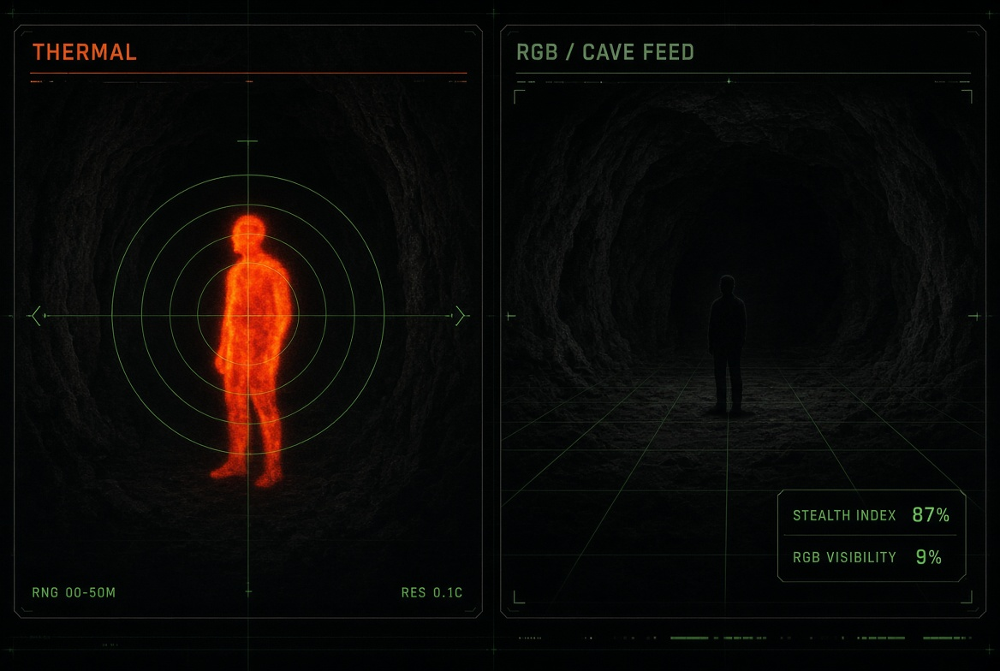
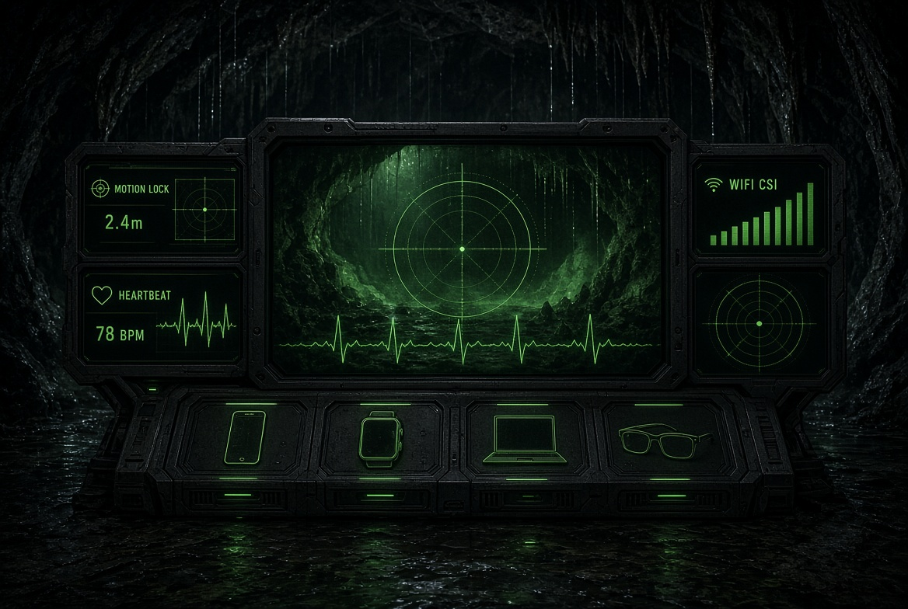

01
Through-Wall Heartbeat
95%+ ECG-class accuracy through wood and brick. Radar-to-ECG translation runs on-device.
Single-channel UWB radar that reads heartbeat through wood and brick, flags arrhythmia, watches machines before they fail, and keeps a factory floor safe — without a camera ever turning on.
Based on a single-channel UWB radar SoC. Presence, vitals, vibration, and zone awareness — no photos, no video, no line of sight required.
95%+ ECG-class accuracy through wood and brick. Radar-to-ECG translation runs on-device.
Chip-level abnormal rhythm detection. LSTM autoencoder flags irregular beats instantly.
Presence + vitals with zero lens. Privacy stays intact because visual data never exists.
Micro-vibration shift detection before a motor fails. Health % and remaining-life estimates.
Instant motion flag + haptic / push alert. Watch, phone, and glasses fire together.
Knows who is inside a high-risk area without ID badges. Virtual boundaries, live presence.
Catches abnormal vibration defects before shipping. Factory dashboard on Mac / Windows.
Micro-Doppler signatures identify presence, then identity class, affect, and zone.
On-device inference for vitals. Cloud is for dashboards — not for your ECG.
The same three numbers sync to iPhone 13+, Android, laptop, and watch. Pick a deck. The waveform, BPM, and lock-range stay live.
SwiftUI command deck. Live radar waveform, HealthKit BPM write, CoreBluetooth to the UWB puck, APNs fall banner, WidgetKit lock-screen pulse, Live Activities while an incident is open.
MediaPipe segmentation, thermal + RGB fusion, and WiFi CSI sit next to the radar mesh. Pinch to vanish on your camera. Not a cloak for someone else’s security cam.
MediaPipe Selfie Segmentation cuts the person and alpha-blends a captured background. MediaPipe Hands reads a pinch (or open palm) to toggle ghost mode in ~0.2s.
LWIR/MWIR background model minus live frame finds human shapes when cloth matches the wall. Thermal + RGB is the single-person segmenter. Dual view: thermal stealth index vs RGB visibility.
Channel State Information on 2.4 / 5 GHz reads presence and gesture without a lens. Non-contact WiFi presence methods reach up to 99%. Motion shows as RSSI spikes.
Radar-style distance + direction tracking, same lock used for BPM range on phone and watch.
Coach Colin signature: pinch, hand skeleton glows, body drops out of your own 30 FPS 1080p anamorphic 2.4:1 feed.
iPhone · Android · Laptop · Smart glasses AR HUD · Drone aerial thermal · IoT camera feed. Thermal gain, motion radar, and WiFi waves live in one console.


The invisibility effect runs on your own camera feeds that you control — privacy, content, AR. It does not make you physically invisible to cameras you do not own.
Uses your device camera only in this browser. Capture an empty frame, then vanish. Thermal remaps the same feed. Motion and range react to movement. Nothing is uploaded.
Arm the camera. Step out of frame and capture the empty room. Step back in and hit Vanish — your body is replaced with that still. Thermal paints heat on the same pixels. Fall drill fires Mr. Wayne and the watch alert.
MQTT + WebSockets keep iPhone, Android, laptop, watch, glasses, and the edge unit under 120ms.


Presence list, radar waveform, heartbeat, and a live zone map. Falls push to watch and phone in the same beat. Glasses overlay keeps the floor lead heads-up.
Motor scan, remaining life, and vibration spikes at 2.4 kHz before a bearing takes the line down. Quality-control pass rate sits next to the waveform.

Novelda X4M300 / Infineon BGT60TR13C single-channel radar.
C++ / TinyML on FreeRTOS. Edge impulse models for presence and fall.
Heartbeat extraction from micro-Doppler before the vitals model.
Radar-to-ECG translation at 95% accuracy, on-device only.
Arrhythmia and vibration defect detection on the same core.
WebSockets fan-out. TimescaleDB, Postgres, Redis for presence.
SwiftUI, Jetpack Compose, React + Recharts, Spark AR + Unity.
Predictive-maintenance dashboards. No cloud ECG store.

The same MQTT topic tree and on-device vitals model, compiled per platform so iPhone 13, Android, laptop, watch, and glasses stay in lockstep.
Minimum: iPhone 13, iOS 16. CoreBluetooth 5.x to the radar puck. APNs for fall. WidgetKit lock-screen BPM. Live Activities during an incident.
Minimum: Android 12. Foreground radar service, WorkManager sync, Bluetooth LE, Material You. Adaptive layout for compact and foldables.
Factory ops console. Vibration FFT, health %, Grafana embed, multi-zone map. Keyboard shortcuts for Mr. Wayne.
Haptic fall, tap-for-emergency, 78 BPM live, Zone B chip. Works as a satellite of the phone mesh, not a standalone radar.
HUD only: worker count, motion lock range, heartbeat. No camera capture from our side. Glasses consume the mesh, they do not film it.
Novelda X4M300 / Infineon BGT60TR13C. BLE 5.3 + UWB out. RTSP off. This is the only radio that “sees.”
On-device inference only for vitals. AES-256 end-to-end. GDPR / HIPAA compliant mode.
The “camera” unit stores no video. RTSP is disabled.
Heartbeat never leaves the chip as a waveform dump.
Encrypted device mesh. Secure link stays active in the HUD.
GDPR / HIPAA mode for hospitals, plants, and night shifts.


Background score and a deep-voiced receptionist start on your say-so. Works as a web app on iPhone 13+, Android, laptop, watch browser, and glasses HUD.